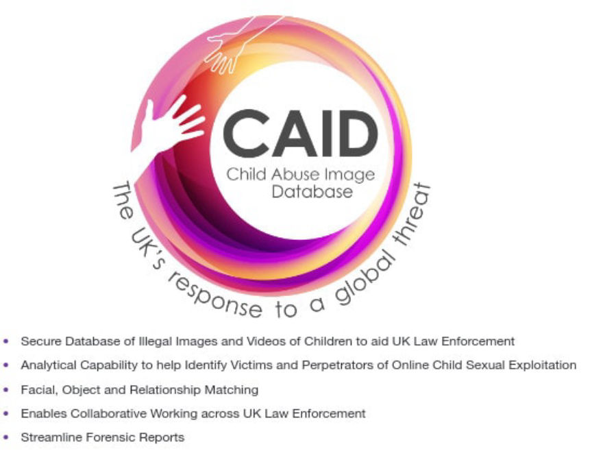
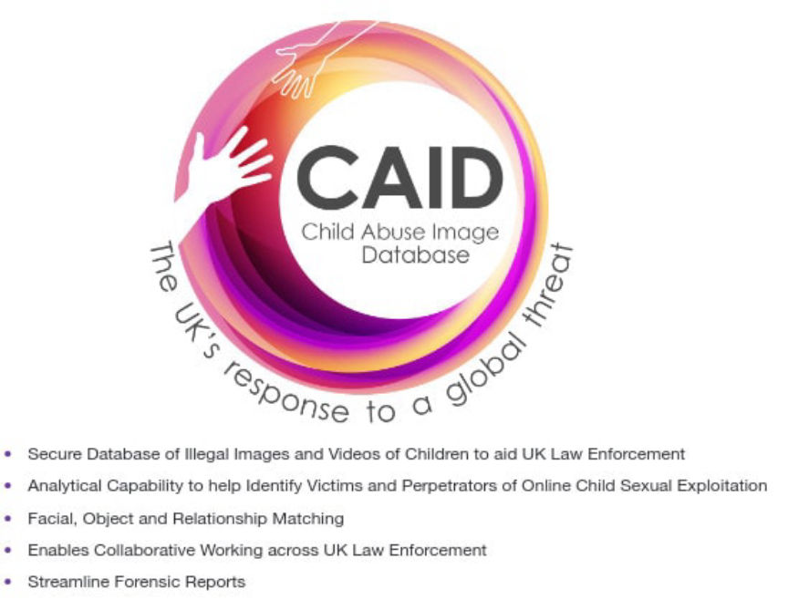

UK Government to Spend 30M in fighting Against Dark Web Child Predators
~3 min read | Published on 2019-09-18, tagged Child-Abuse, Child-Porn using 559 words.
The UK government has pledged to strengthen the fight against online child exploiters and abusers. This is according to an announcement published by the Home Office. The government will enhance the fight by a £30M fund and will mostly target dark web pedophiles.
The fund will continue the work done by earlier funding that facilitated the formation of a joint operation team by the NCA and GCHQ. The NCA has its intelligence-gathering task force that monitors the trends in child abuse on the dark web. The intelligence gathered by the NCA showed that in 2018, 2.88 million accounts were registered worldwide on dark web child porn sites. Of the 2.88 million accounts, the NCA believes 5% of them belong to UK residents.
To reduce the threat posed by pedophiles, the fund will facilitate the involvement of Artificial Intelligence (AI) in the UK’s Child Abuse Image Database (CAID). CAID has been in use since December 2014 and has 14 million images. It helps law enforcement agencies in quick identification of the victims in child abuse images they find in seized devices. The use of AI is expected to enhance CAID’s functionality by carrying out voice analytics and age estimations.
The fund is part of Boris Johnson’s crackdown on crime in the UK. When pledging to fight against crime Boris Johnson said that the internet is a revolutionary tool being used as a haven by criminals. Boris also said, “That is why we are taking further steps to combat those who use the internet to prey upon children.” And added, “we are also putting more money and the very best of our world-leading technical abilities into catching offenders operating in the dark web.”
Speaking in support of the fund home secretary Priti Patel said that online child predators are “cowards who need to be caught and punished.” He said the need to catch pedophiles requires the government to support law enforcement agencies with all that they need to pursue the offenders. Patel finalized his statement by saying that the £30M fund will help in making it impossible for pedophiles to hide online.
The fund is expected to increase the success rate of investigations by UK law enforcement agencies into dark web child abuse cases. In one of the most recent cases by the NCA, a 26- year-old man from Surrey was jailed for 22 years in March for posting a video of himself sexually abusing a 3-year-old girl on the dark web. Even though Kyle Fox’s face was not visible in the video, NCA specialists reportedly retrieved valuable leads from the videos.
They then used the clues in positively identifying Kyle and his victims. Other suspects convicted in the recent past include 31-year-old Tashan Gallagher who was jailed for 15 years after he filmed himself raping a six-month girl and sexually assaulting a 2-year-old boy. The other convict is a dark web pedophile Dr. Matthew Falder who pleaded guilty to 137 charges. Falder was sentenced to 32 years before they were reduced to 25 years in late 2018.
In addition to the fund, the UK government will co-host the WePROTECT Global Alliance Summit with the African Union in Ethiopia. The summit will bring together leaders from all over the world and other interested parties. The summit is expected to provide a platform for brainstorming and finding a solution to the child abuse problem.
The fund will continue the work done by earlier funding that facilitated the formation of a joint operation team by the NCA and GCHQ. The NCA has its intelligence-gathering task force that monitors the trends in child abuse on the dark web. The intelligence gathered by the NCA showed that in 2018, 2.88 million accounts were registered worldwide on dark web child porn sites. Of the 2.88 million accounts, the NCA believes 5% of them belong to UK residents.
To reduce the threat posed by pedophiles, the fund will facilitate the involvement of Artificial Intelligence (AI) in the UK’s Child Abuse Image Database (CAID). CAID has been in use since December 2014 and has 14 million images. It helps law enforcement agencies in quick identification of the victims in child abuse images they find in seized devices. The use of AI is expected to enhance CAID’s functionality by carrying out voice analytics and age estimations.
The Child Abuse Image Database (CAID)
The fund is part of Boris Johnson’s crackdown on crime in the UK. When pledging to fight against crime Boris Johnson said that the internet is a revolutionary tool being used as a haven by criminals. Boris also said, “That is why we are taking further steps to combat those who use the internet to prey upon children.” And added, “we are also putting more money and the very best of our world-leading technical abilities into catching offenders operating in the dark web.”
Speaking in support of the fund home secretary Priti Patel said that online child predators are “cowards who need to be caught and punished.” He said the need to catch pedophiles requires the government to support law enforcement agencies with all that they need to pursue the offenders. Patel finalized his statement by saying that the £30M fund will help in making it impossible for pedophiles to hide online.
The fund is expected to increase the success rate of investigations by UK law enforcement agencies into dark web child abuse cases. In one of the most recent cases by the NCA, a 26- year-old man from Surrey was jailed for 22 years in March for posting a video of himself sexually abusing a 3-year-old girl on the dark web. Even though Kyle Fox’s face was not visible in the video, NCA specialists reportedly retrieved valuable leads from the videos.
They then used the clues in positively identifying Kyle and his victims. Other suspects convicted in the recent past include 31-year-old Tashan Gallagher who was jailed for 15 years after he filmed himself raping a six-month girl and sexually assaulting a 2-year-old boy. The other convict is a dark web pedophile Dr. Matthew Falder who pleaded guilty to 137 charges. Falder was sentenced to 32 years before they were reduced to 25 years in late 2018.
In addition to the fund, the UK government will co-host the WePROTECT Global Alliance Summit with the African Union in Ethiopia. The summit will bring together leaders from all over the world and other interested parties. The summit is expected to provide a platform for brainstorming and finding a solution to the child abuse problem.